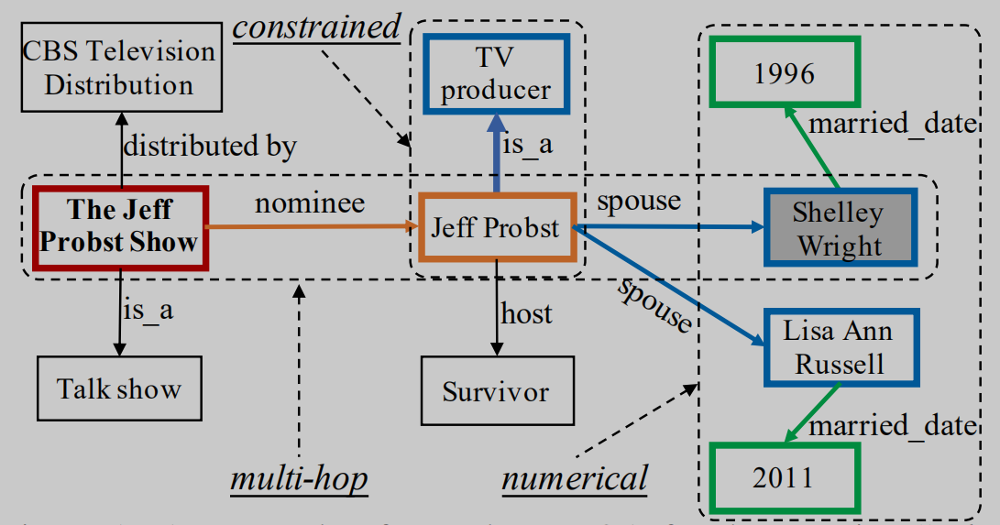
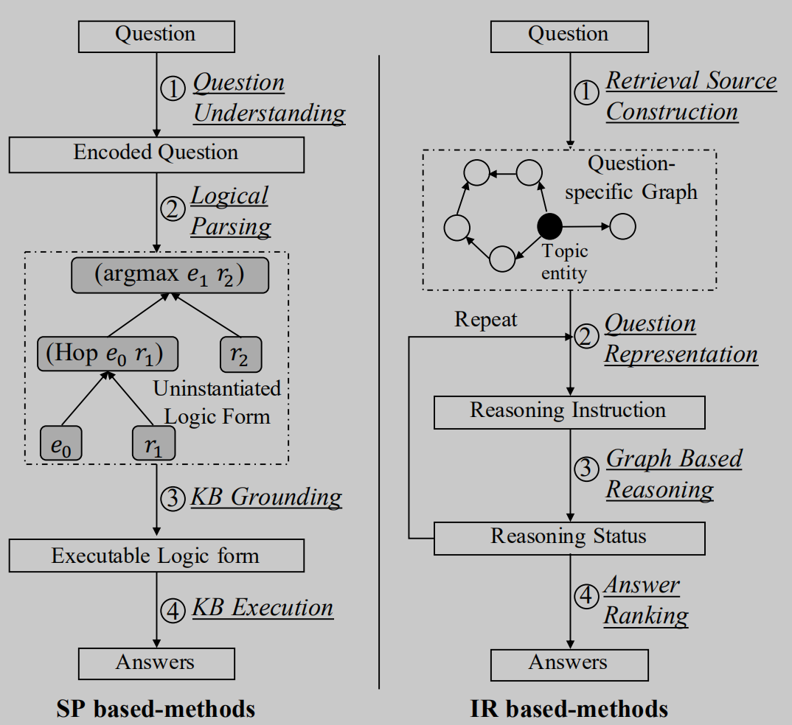
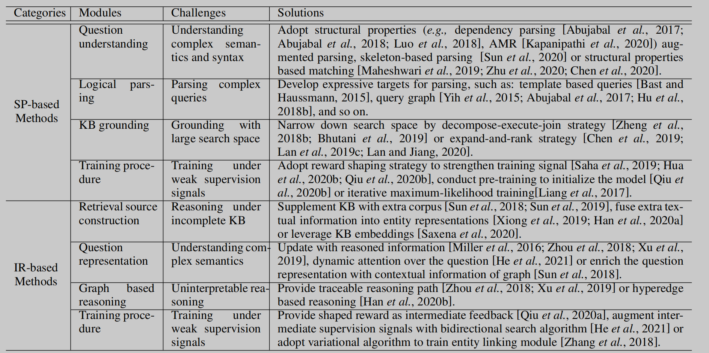

简介
今天来读一篇2021年的知识库问答的综述/问卷，《A Survey on Complex Knowledge Base Question Answering:Methods, Challenges and Solutions》，论文收录在IJCAI 2021中。这篇文章主要介绍了知识库问答的背景与挑战，并总结介绍了两大主流方法：基于语义解析（semantic parsing-based，SP-based）和基于信息检索（information retrivel-based，IR-based）。
知识库问答
知识库是一个结构化的数据库，它与知识图谱类似，由（主体Subject，关系Relation，客体Object）三元组组成，例如（JK罗琳，出生地，英国），常见的知识库有Freebase等。这个三元组可以用来回答“JK罗琳出生在哪里？”的问题。与简单的、答案与主体直接相连的简单QA不同，复杂QA查询任务涉及多跳推理甚至一些聚合关系。然而复杂的问题往往包含多个实体和关系，需要多跳才能处理。例如下图知识库，“谁是The Jeff Probst Show提名的TV Producer的第一任妻子”问题的答案，包含多个实体和多跳处理逻辑。 
KBQA的第一步是识别问题中的主体并链接到知识库中的实体，然后根据实体的邻域推导问题答案。这里分为两种方法基于语义解析和基于信息检索的两种方法。语义解析的思想是将自然语言问题表示为可以在知识库中进行查询的符号化的逻辑形式，然后再用逻辑语言进行查询（例如SQL）。基于信息检索的方法思想是构建一个问题特定的知识图包含了相关的所有信息，然后将所有实体按相关性进行排序。然而，这些方法会面临以下挑战： - 基于语义解析的方法很难覆盖复杂的查询（多跳推理、约束关系、数值计算等）。类似的，基于信息检索的方法也很难回答复杂的问题，检索的实体范围可能太小，而且解释性差。 - 复杂的实体和关系会使得搜索空间过大（逻辑形式、候选结果等），搜索开销过大。 - 两种方法将问题理解看作重要的步骤，当问题的语法和语义复杂时，模型需要有很强的自然语言理解和生成能力。 - 弱监督问题。问答数据集中往往只存在问题和答案，缺少推理路径，而标注这样的推理路径成本过于高昂。弱监督问题给两种方法都带来了困难。
评估指标上，KBQA往往是从答案集合上选出置信度最高的，常见的评估指标由F1、准确率、召回率、Hits@1等。
主流方法
流程图如下图所示。 
基于语义解析的方法
旨在将自然语言问题解析为逻辑形式，按照以下步骤： 1. 问题编码 2. 逻辑解析 3. 逻辑验证 4. 逻辑执行 优点：解释性强 缺点：严重依赖逻辑形式和解析算法的设计，成为性能提升的瓶颈
基于信息检索的方法
旨在根据问题检索候选答案集合并对其进行排序，按照以下步骤： 1. 确定中心实体，提取问题特定的部分知识子图 2. 问题编码 3. 图推理，沿着相邻实体关系进行语义匹配，传播和聚合信息 4. 按照置信度进行排序 优点：端到端训练 缺点：解释性差
挑战与解决方案
论文总结了两种方法面临的挑战和解决方案，汇总成下面的表格。

总结和展望
论文主要介绍了两种典型的知识库问答方法，总结了它们面临的挑战及解决方案，并指出复杂KBQA未来的可能研究方向：
- 在线学习。已有的复杂KBQA系统都是离线学习、在线部署。然而用户的反馈可能是改进KBQA的方法。基于此，一些工作开始利用用户反馈去纠正KBQA的回答。还有一些工作直接让用户参与到了问题解析过程中。
- 鲁棒性和可解释性。已有的方法虽然可以在基准数据集上可以取得很好的结果，但是遇到分布之外的情况可能无法很好处理。有研究人员开始提出相关的数据集来解决该问题。
- 更通用的知识库。知识库往往是不完整的，一些工作开始引入文本、图像来进行更复杂的KBQA推理。关于知识库更普遍的定义和更灵活的使用方法能让KBQA发展的更好。